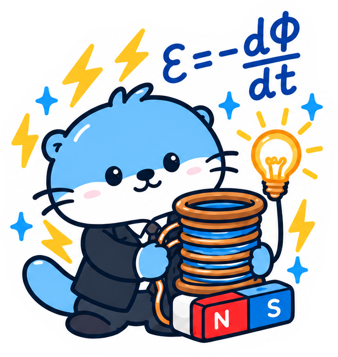
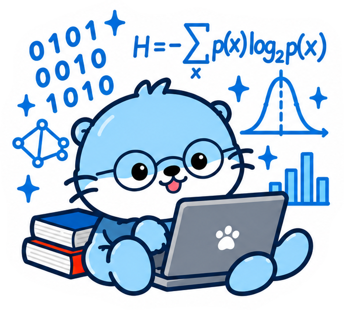
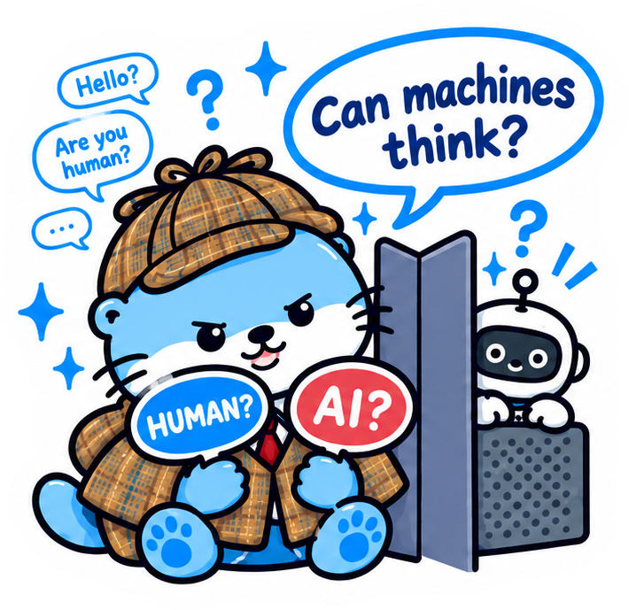
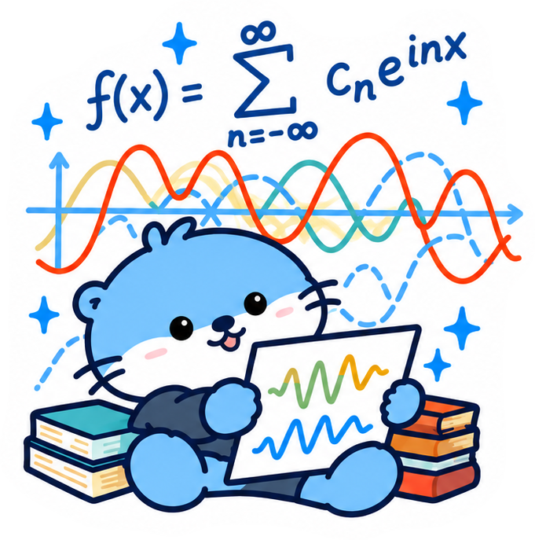
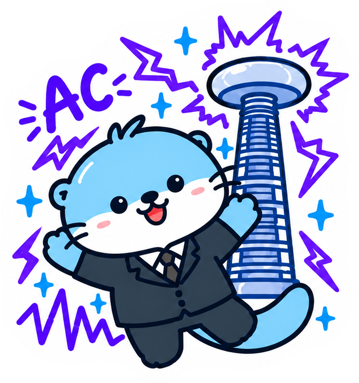
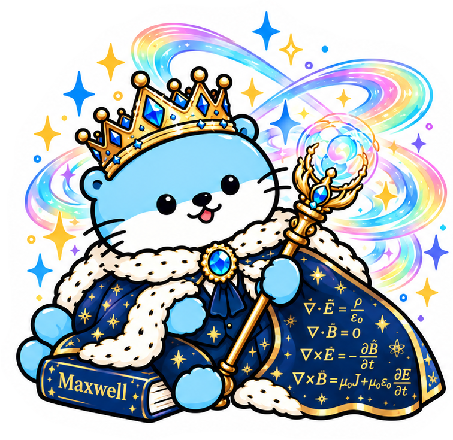

과학의 생각이 더 나은 세상을 만드는 달구 🐾
전기·전자·컴퓨터공학의 역사를 만든 여섯 거장을 달구가 직접 변신해서 소개합니다.

가난한 대장장이의 아들로 정규 교육을 거의 받지 못했지만, 제본소 견습생으로 일하며 책을 읽다 과학자가 되었습니다. 1831년 전자기 유도 법칙을 발견해 "자석을 움직이면 전기가 생긴다"는 사실을 처음 보여줬고, 이것이 발전기·모터·변압기의 원리입니다. 전기장·자기장이라는 "장(field)" 개념도 그가 만들었습니다.
ε = −dΦ/dt

MIT 석사논문에서 불 대수를 전기회로에 적용해 디지털 논리회로의 기초를 세웠고, 1948년 「통신의 수학적 이론」으로 정보이론을 창시했습니다. 비트(bit), 엔트로피, 채널 용량 같은 개념이 여기서 나왔고, 압축·오류정정·무선통신이 모두 이 이론 위에 서 있습니다. 저글링 로봇과 미로 찾는 쥐를 만든 괴짜이기도 합니다.
H = −Σ p(x) log₂ p(x)

1936년 튜링 머신으로 "계산 가능하다"는 것이 무엇인지 수학적으로 정의해 컴퓨터과학의 토대를 놓았습니다. 2차대전 중에는 독일군 암호 에니그마 해독에 핵심 역할을 했고, 1950년 논문 「계산 기계와 지능」에서 "기계가 생각할 수 있는가?"를 묻고 튜링 테스트를 제안했습니다. 달구가 칸막이 너머 로봇을 심문하는 장면이 바로 그 테스트입니다.
"Can machines think?"

나폴레옹의 이집트 원정에 동행한 수학자이자 행정가였습니다. 열이 전달되는 과정을 연구하다 1822년 「열의 해석적 이론」에서 어떤 복잡한 파형도 단순한 사인파의 합으로 나타낼 수 있다는 푸리에 급수를 발표했습니다. 음성 인식, 이미지 압축(JPEG), 5G 통신(OFDM), MRI까지 신호를 다루는 거의 모든 기술이 푸리에 변환을 씁니다. 온실 효과를 처음 설명한 사람이기도 합니다.
f(x) = Σ cₙ e^{inx}

1888년 교류 유도전동기와 다상 교류 시스템을 발명해, 에디슨의 직류와 벌인 "전류 전쟁"에서 승리했습니다. 오늘날 발전소에서 집까지 전기가 오는 송전망은 테슬라의 설계를 따릅니다. 고주파 변압기인 테슬라 코일, 무선 전력 전송 실험 등으로도 유명하며, 자기장의 단위 T(테슬라)에 이름이 남았습니다.
AC · 3상 교류

패러데이의 실험을 수학으로 옮겨 1865년 맥스웰 방정식 4개로 전기와 자기를 하나로 통합했습니다. 그 과정에서 전자기파의 존재를 예측하고 그 속도가 빛의 속도와 같다는 것을 계산해, 빛이 곧 전자기파임을 밝혔습니다. 라디오, 와이파이, 안테나, 광통신, 레이더가 전부 이 방정식에서 나왔습니다. 아인슈타인은 맥스웰을 뉴턴과 같은 급으로 꼽았습니다.
∇·E = ρ/ε₀ ∇·B = 0 ∇×E = −∂B/∂t ∇×B = μ₀J + μ₀ε₀∂E/∂t